Capítulo 01
Qué es el tiro al plato y por qué existe este proyecto
El tiro al plato se entiende mal cuando se explica solo como puntería. Desde fuera parece que alguien ve salir un disco naranja, levanta una escopeta y dispara. Pero el gesto real es más delicado: el tirador está quieto en un puesto, el plato aparece de golpe, la mirada tiene que capturarlo, el cuerpo tiene que acompañarlo y el disparo debe anticipar un punto que todavía no existe. Este libro empieza ahí, en esa pequeña diferencia entre apuntar a algo y adelantarse a algo.
Plato nace como una herramienta para mirar despacio lo que en la cancha sucede demasiado rápido. No quiere sustituir al instructor ni al campo real, sino dar palabras e imágenes a una experiencia que muchas veces se aprende por frases sueltas: vas detrás, lo has tapado, no pares la mano, mira el plato, levanta un poco. Todas esas frases pueden ser ciertas, pero para un principiante son insuficientes si no ve la relación entre trayectoria, tiempo y plomeo.
El blanco no espera
En una diana fija, el error queda impreso en el papel. El tirador puede mirar el agujero, medir la desviación y repetir. En el tiro al plato, el error desaparece con el propio plato. Si se falla, el blanco sigue su vuelo, cae, se pierde de vista o se rompe contra el suelo. La memoria del fallo queda reducida a una sensación: quizá parecía que iba bien, quizá el disparo sonó tarde, quizá el cañón tapó el objetivo.
Por eso el tiro al plato obliga a aprender de otra manera. La corrección no se basa solo en el impacto visible, sino en la lectura del movimiento. El tirador aprende a reconocer velocidades aparentes, direcciones, alturas, distancias y ritmos. Aprende también a no mirar la escopeta como si fuera una mira de rifle. El plato manda; el arma acompaña.
Del deporte al laboratorio visual
El deporte existe porque esa dificultad puede reglamentarse. Las máquinas lanzan platos con esquemas, las canchas tienen puestos, los tiradores rotan y las competiciones cuentan aciertos. Pero debajo de la regla sigue existiendo una pregunta física: ¿dónde debe estar la nube de perdigones cuando el plato llegue?
El simulador convierte esa pregunta en una escena visible. Muestra el plato, la zona de adelanto, el patrón de plomeo y la corrección posterior. Su valor no está en hacer bonito el disparo, sino en permitir que el usuario repita una salida, cambie una sola variable y observe qué sucede.
Un manual para alguien que empieza
Este libro se escribe pensando en alguien que no ha tirado nunca, pero también en quien ya tira y quiere entender por qué falla ciertos platos. Por eso alterna lenguaje de campo y explicación técnica. Primero se explica qué siente y ve el tirador; después se abre la geometría y la física que hay detrás.
No hace falta saber programar ni resolver parábolas para beneficiarse del simulador. Lo que sí conviene es leer con paciencia: seguridad, cancha, escopeta, encare, adelanto, plomeo y modalidades forman una cadena. Saltarse los primeros eslabones suele llevar a conclusiones falsas.
Qué puede aportar Plato
Plato puede ayudar a construir una imagen mental del adelantamiento, comparar trayectorias, entender por qué el segundo tiro no es simplemente una repetición del primero y estudiar cómo cambia el plomeo con la distancia. También puede servir para hablar con un instructor con más precisión: en vez de decir “no sé qué pasa”, el tirador puede decir “creo que me quedo bajo en los ascendentes” o “en los laterales rápidos sigo disparando al plato”.
Lo que no puede hacer es enseñar por sí solo manipulación segura del arma, corregir una culata mal ajustada o reproducir el ruido, el peso, el retroceso y la presión de una cancha. Es un libro y un laboratorio visual; no es una autorización, una homologación ni una clase presencial.
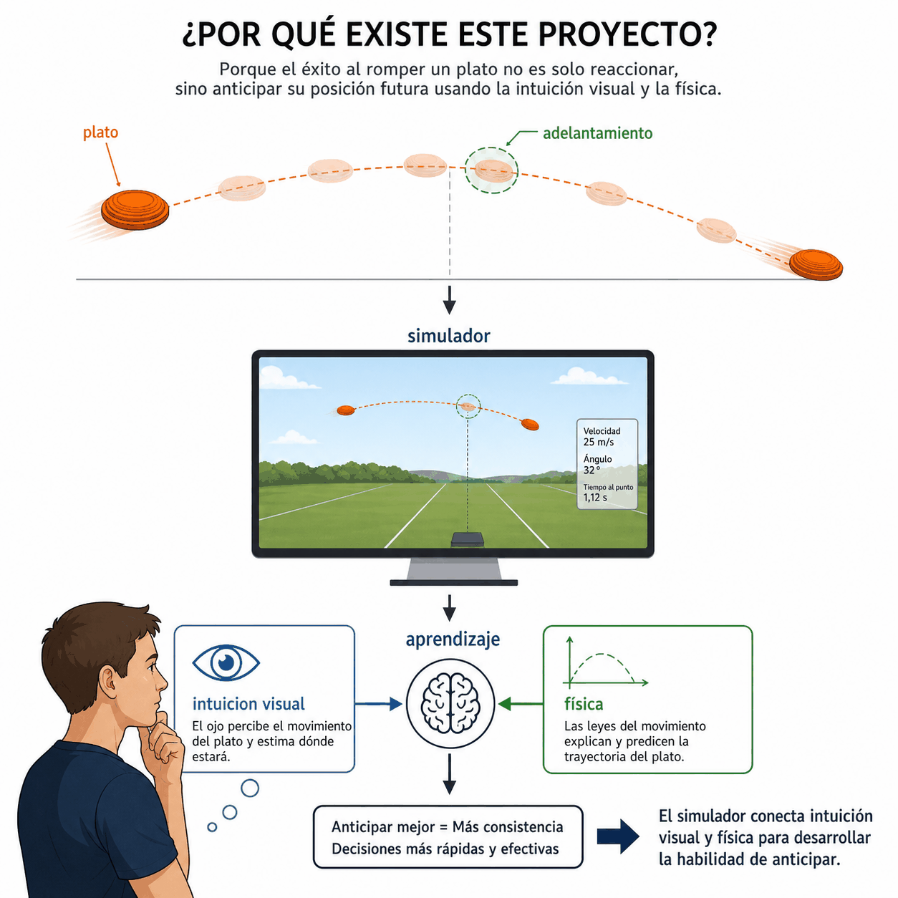
Qué hemos aprendido
- El tiro al plato no es apuntar a un objeto quieto: es anticipar una posición futura.
- Plato convierte una sensación rápida en una escena que se puede observar, repetir y discutir.
- El simulador es una herramienta de comprensión, no un sustituto de cancha, instructor ni seguridad real.
Lectura experta. Para una lectura técnica, este capítulo fija la tesis del proyecto: el valor no está en gamificar el tiro, sino en hacer explícita la relación entre geometría, tiempo de vuelo, patrón de plomeo y corrección posterior.
Capítulo 02
Cómo empezar a tirar al plato en España
El primer problema de una persona que quiere iniciarse no suele ser técnico, sino práctico. ¿Dónde se aprende? ¿Hay que federarse antes? ¿Se necesita licencia de armas? ¿Puede uno probar antes de comprar una escopeta? Las respuestas concretas pueden variar, pero el principio prudente es estable: empezar por un club o una federación territorial, no por la compra impulsiva de material.
Este capítulo no es asesoramiento legal. Es una guía de orientación para entender el mapa. Las licencias, pruebas, seguros y requisitos deben confirmarse siempre con fuentes oficiales, con la federación correspondiente y con la instalación donde se vaya a practicar.
Antes de comprar nada
Un principiante puede sentir prisa por elegir escopeta, cartuchos y accesorios. Esa prisa suele ser mala consejera. Hasta que una persona no ha pisado una cancha, no ha visto cómo se mueve una escuadra, no ha sentido el retroceso y no ha probado diferentes configuraciones, comprar material es casi adivinar.
Lo más sensato es visitar un campo autorizado, explicar que se parte desde cero y preguntar por cursos de iniciación. Allí se aprende qué se puede hacer con medios del club, qué documentación se exige, qué seguros intervienen y qué pasos conviene dar antes de adquirir un arma propia.
Club, federación y Administración
En la práctica española hay que distinguir tres planos. El club o campo organiza la actividad cotidiana y aplica sus normas internas. La federación estructura la parte deportiva, licencias federativas, competiciones y seguros. La Administración regula la autorización de armas y los requisitos legales.
Confundir estos planos genera frustración. Una licencia federativa no equivale automáticamente a una licencia de armas, y una licencia de armas no convierte a nadie en tirador formado. Cada documento responde a una función distinta.
Licencia de armas y licencia federativa
En España, quien quiera practicar con escopeta propia debe informarse sobre la licencia de armas que corresponda. Para escopetas y armas de tiro deportivo incluidas en la categoría aplicable, la referencia habitual es la licencia tipo E, tramitada ante la Guardia Civil. La primera expedición exige acreditar capacitación sobre conocimiento, cuidado, conservación, Reglamento de Armas y manejo seguro.
La licencia federativa pertenece a otro plano: permite integrarse en la práctica deportiva federada, participar en determinadas actividades y contar con la cobertura que establezca la federación. Una persona que empieza debería preguntar en su club o federación territorial qué modalidad va a practicar, qué licencia deportiva necesita, qué seguro está incluido y qué pasos administrativos debe hacer antes de tirar de forma autónoma.
Pruebas y documentación
La prueba administrativa no debe entenderse como un trámite molesto, sino como un filtro mínimo de responsabilidad. Normalmente se evalúa teoría y práctica: conocimiento básico del arma, normativa, conservación y habilidad de manejo. Además pueden intervenir certificados médicos o psicotécnicos, tasas, identificación, antecedentes y la documentación que la Intervención de Armas indique en cada caso.
La recomendación práctica es sencilla: no preparar estos pasos con rumores. Hay que consultar la sede de la Guardia Civil, el BOE y la intervención provincial correspondiente. Las fechas, formularios y detalles pueden cambiar, y el manual debe enseñar a buscar la fuente correcta.
La primera visita
La primera visita a un campo debería servir para observar. Conviene fijarse en dónde esperan los tiradores, cómo llevan el arma, cuándo la abren, cómo se comunican con el responsable de cancha y cómo rotan entre puestos. Esa cultura de seguridad enseña tanto como el primer plato.
También es el momento de preguntar por protección ocular y auditiva, cursos, horarios, precios, posibilidad de probar material supervisado y requisitos para entrenar. Un buen club no debería empujar al principiante a comprar antes de entender.
Formación de iniciación
Un curso básico no debería limitarse a “romper platos”. Debe enseñar cómo se manipula el arma, cómo se comprueba que está abierta y descargada, cómo se entra y sale del puesto, cómo se actúa ante un fallo de disparo y cómo se pide ayuda sin girarse ni improvisar.
La técnica viene después. Sin una base de seguridad, la mejora deportiva es secundaria. En tiro al plato, aprender a comportarse en la cancha forma parte de la técnica porque permite practicar sin poner en riesgo al grupo.
Qué no comprar todavía
No conviene comprar una escopeta solo porque alguien diga que “vale para todo”. Tampoco conviene elegir cartuchos por potencia o velocidad sin entender retroceso, carga y reglamento. Un chaleco, unas gafas y unos cascos sí pueden ser compras razonables, pero incluso ahí merece la pena escuchar a quien conoce la instalación.
El simulador puede ayudar antes de esa primera compra porque enseña conceptos, no marcas. Permite entender qué es un choke, por qué existe el segundo disparo, qué significa adelantar y por qué la culata cambia lo que se ve.
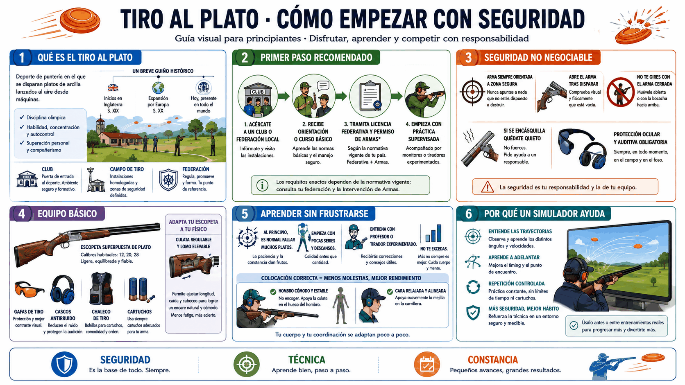
Qué hemos aprendido
- La ruta prudente empieza por club o federación territorial, no por comprar material.
- En España conviene separar licencia federativa, seguro deportivo y licencia administrativa de armas.
- La información legal debe verificarse siempre en Guardia Civil, BOE y federación correspondiente.
Lectura experta. Para clubes y federaciones, este capítulo sitúa el simulador como material de iniciación responsable: orienta, no tramita licencias ni reemplaza cursos, pruebas oficiales o protocolos de cada instalación.
Capítulo 03
Seguridad antes que técnica
La seguridad no es una introducción aburrida antes de llegar a lo interesante. Es lo interesante. Sin seguridad, no hay deporte, no hay aprendizaje y no hay confianza entre tiradores. Todo lo que se diga sobre adelanto, plomeo o modalidades depende de una condición previa: el arma se trata siempre con respeto y la dirección del cañón importa siempre.
Para el principiante, la dificultad es que muchas normas parecen obvias cuando se leen y dejan de serlo cuando hay ruido, nervios, retroceso, compañeros mirando y un plato que acaba de fallarse. Por eso la seguridad tiene que convertirse en secuencia automática.
Tratar toda arma como cargada
La regla de tratar toda arma como si estuviera cargada no se aplica solo cuando hay cartuchos dentro. Se aplica al cogerla, al cerrarla, al abrirla, al hablar, al caminar y al resolver una incidencia. Es una forma de estar en la cancha.
El principiante debe resistir una tentación muy humana: girarse para preguntar o celebrar. Primero se abre el arma, se mantiene una dirección segura y solo después se habla. Ese orden evita sustos y enseña disciplina.
La secuencia segura
Una secuencia segura empieza antes del disparo. Esperar el turno, entrar al puesto, comprobar la zona, cargar cuando corresponde, cerrar orientando el arma hacia delante, encarar, pedir plato y disparar. Después del disparo, mantener la dirección, abrir, comprobar y abandonar el puesto sin barrer a nadie.
La secuencia puede parecer rígida, pero esa rigidez libera atención. Cuando el cuerpo sabe qué hacer, la mente puede concentrarse en ver el plato.
Fallo de disparo e interrupciones
Cuando algo no funciona, el peor impulso es manipular deprisa. Si un cartucho no dispara o el arma se comporta de forma extraña, la respuesta del principiante debe ser conservar la dirección segura y pedir ayuda. No hay premio por resolver solo una incidencia que no se comprende.
Cada campo puede tener un procedimiento concreto para esperar, abrir o avisar. Ese procedimiento manda. El simulador no entrena estas situaciones; solo puede recordarlas.
Protección personal
La protección ocular y auditiva no es decorativa. Un plato puede fragmentarse, un casquillo puede salir hacia un lado, la pólvora deja residuos y el sonido repetido del disparo daña. En una cancha cubierta, el ruido puede sentirse aún más agresivo.
Las gafas también ayudan al contraste, pero no deben elegirse solo por moda. La prioridad es proteger y ver bien. Los cascos o tapones deben colocarse antes de entrar en la zona de tiro, no después del primer disparo.
Fatiga y seguridad
La fatiga reduce la seguridad. Cuando duele el hombro, se cierra la cara, baja la atención y aumenta la irritación. Un principiante cansado aprende peor y se comporta peor. Parar a tiempo también es técnica.
Muchas malas costumbres aparecen al final de una sesión demasiado larga. Mejor pocas series con atención que muchas repeticiones que consolidan dolor y descuidos.
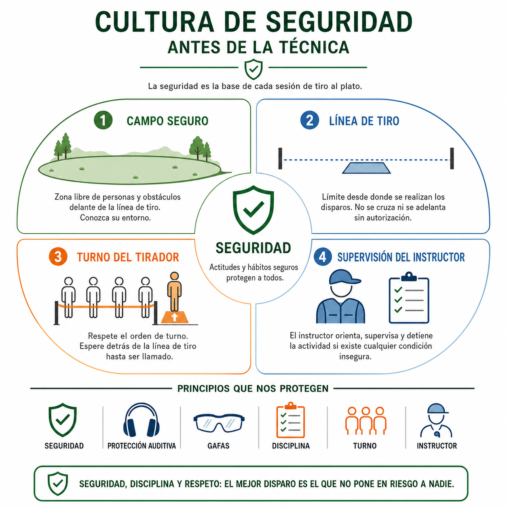
Qué hemos aprendido
- La seguridad forma parte de la técnica, no es una introducción decorativa.
- La secuencia segura debe hacerse automática antes de buscar rendimiento.
- Fatiga, prisa y euforia después del disparo son enemigos directos de la seguridad.
Lectura experta. La lectura experta aquí es sencilla: cualquier herramienta pedagógica que enseñe adelanto sin reforzar cultura de seguridad queda incompleta. Por eso el manual coloca seguridad antes de geometría y balística.
Capítulo 04
Cómo es una cancha y cómo se desarrolla una serie
La cancha no es solo el fondo sobre el que se ve el plato. Es una geometría deportiva. Los puestos, el foso, la distancia, la zona de vuelo y la rotación determinan cómo aparece el blanco y cómo debe organizarse el grupo.
Entender la cancha ayuda a entender el simulador. Cuando se cambia de puesto, el mundo no se desordena: cambia la relación entre el ojo del tirador y la salida del plato. Por eso una línea que parecía centrada en un puesto puede sentirse lateral en otro.
Puestos y foso
En las modalidades de foso, el tirador se coloca detrás de una línea de puestos y dispara hacia una zona donde están las máquinas. El foso oculta parte de la mecánica y deja visible la zona por donde aparece el plato. El señuelo o referencia no es un blanco al que disparar, sino una pista de aparición.
El tirador empieza mirando una zona, no un plato. Cuando pide, el plato sale y la atención cambia de espera a seguimiento. Ese instante es crítico: si se mira demasiado fijo al foso, se tarda en capturar el vuelo; si se mira demasiado lejos, se puede perder la salida.
La rotación
Una serie organiza turnos y puestos. El tirador no se queda siempre en el mismo lugar porque la modalidad busca variedad. Al rotar, cambian los ángulos aparentes y las referencias corporales. Lo que era cómodo en el puesto central puede sentirse cerrado o cruzado en un lateral.
El simulador debe respetar esa rotación. Si el usuario empieza en el puesto 2, la secuencia debe avanzar desde ahí. Si repite plato por entrenamiento o por plato nulo, no debe contar ni mover de puesto.
Plato válido, nulo y repetido
Un plato válido sale conforme a la regla de la modalidad. Un plato nulo puede salir roto, defectuoso, fuera de esquema o afectado por una incidencia. En competición, repetir no es una concesión caprichosa; responde a reglas.
En entrenamiento, repetir tiene otro sentido. Permite estudiar una salida difícil hasta comprenderla. Plato incorpora esta idea porque el aprendizaje necesita aislar problemas.
La perspectiva del ojo
El simulador se esfuerza por representar la perspectiva del tirador, no una vista de maqueta. Eso significa que el foso se ve desde una altura de ojo, la línea central debe mantener sentido visual y el suelo no debe desplazarse cuando se mueve el punto de mira.
Este punto fue importante durante el desarrollo: mover el ratón no mueve el campo. Mueve la mira. El tirador no arrastra el universo; orienta el arma desde su eje visual.
La cancha como mapa mental
Con el tiempo, el tirador construye un mapa de la cancha: dónde mirar, dónde esperar, qué platos suelen pedir más adelanto desde cada puesto, qué salidas tapan la escopeta y qué referencias ayudan al segundo disparo.
El objetivo del manual es acelerar esa construcción sin saltarse la experiencia real.
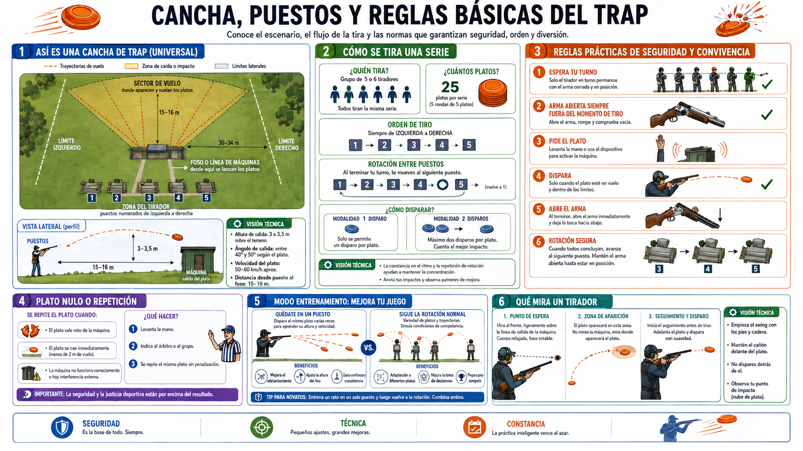
Qué hemos aprendido
- La cancha es una geometría: puestos, foso, salida, rotación y referencias visuales.
- Repetir plato no debe contar ni mover de puesto; sirve para aislar una salida.
- La perspectiva correcta es la del ojo del tirador: mover la mira no mueve el suelo ni la cancha.
Lectura experta. Para una revisión federativa, este capítulo declara una exigencia clave del modelo: las salidas deben respetar la lógica de foso y modalidad, y cualquier esquema debe poder verificarse contra distancias, alturas y ángulos documentados.
Capítulo 05
Escopetas, culatas, chokes, cartuchos y equipamiento
La escopeta no es un puntero neutro. Su peso, culata, banda, punto de mira, chokes y cartuchos modifican cómo se ve el plato y cómo llega el disparo. A veces el principiante cree que falla por “puntería” cuando en realidad está luchando contra un encare inconsistente o una culata que no lo coloca bien.
Este capítulo no pretende recomendar compras concretas. Pretende explicar qué preguntas conviene hacer antes de comprar.
Tipos de escopeta
En plato se ven escopetas superpuestas porque son robustas, permiten dos disparos y muestran con claridad si están abiertas. También existen semiautomáticas y paralelas, pero cada una tiene implicaciones de seguridad, manejo, expulsión de cartuchos y aceptación en distintas canchas.
La herramienta debe encajar con la modalidad, el tirador y el entorno. Una escopeta de caza puede servir para empezar en ciertos contextos, pero una escopeta específica de trap está pensada para otro volumen de disparos, otra estabilidad y otra relación con platos ascendentes.
Culata y ojo
La culata coloca el ojo. Esta frase resume gran parte del problema. Si la cara queda alta, baja, adelantada o desplazada, la relación entre ojo, banda y punto de mira cambia. El tirador puede creer que apunta igual, pero el disparo sale a otro sitio.
Un lomo regulable permite modificar esa relación. Si se sube, puede aumentar la ganancia y hacer que el arma impacte más alto respecto a la referencia visual. Pero ajustar no es esconder errores: debe hacerse con método y, si es posible, con alguien que observe.
La solista y el punto de mira
La banda o solista no debe convertirse en el centro de la atención. En plato se mira el objetivo. Sin embargo, la solista influye porque ocupa campo visual y porque el punto de mira sirve como referencia periférica.
Cuando la solista se ve plana, puede parecer una línea muy fina. Si se ve más banda, la imagen cambia. Representarlo bien en un simulador es difícil porque no basta con dibujar una escopeta desde fuera: hay que pensar desde el ojo del tirador.
Chokes y plomeo
El choke no hace que el tirador apunte mejor. Modifica la apertura de la nube de perdigones. Un choke más abierto puede ayudar cerca porque cubre más, pero pierde densidad con distancia. Uno más cerrado exige más precisión, pero conserva densidad más lejos.
Por eso el primer y segundo disparo pueden tener aperturas distintas. El primer plato está más cerca; el segundo, más lejos y a menudo en otra fase de vuelo.
Cartuchos
Los cartuchos combinan calibre, carga, tamaño de perdigón, velocidad anunciada, taco, pólvora y retroceso. Una cifra de velocidad no cuenta toda la historia. Tampoco una carga mayor significa automáticamente mejor resultado para entrenar.
En el simulador se modelan velocidad, dispersión y energía residual de forma pedagógica. En la realidad, la prueba de plomeo con arma y cartucho concretos sigue siendo insustituible.
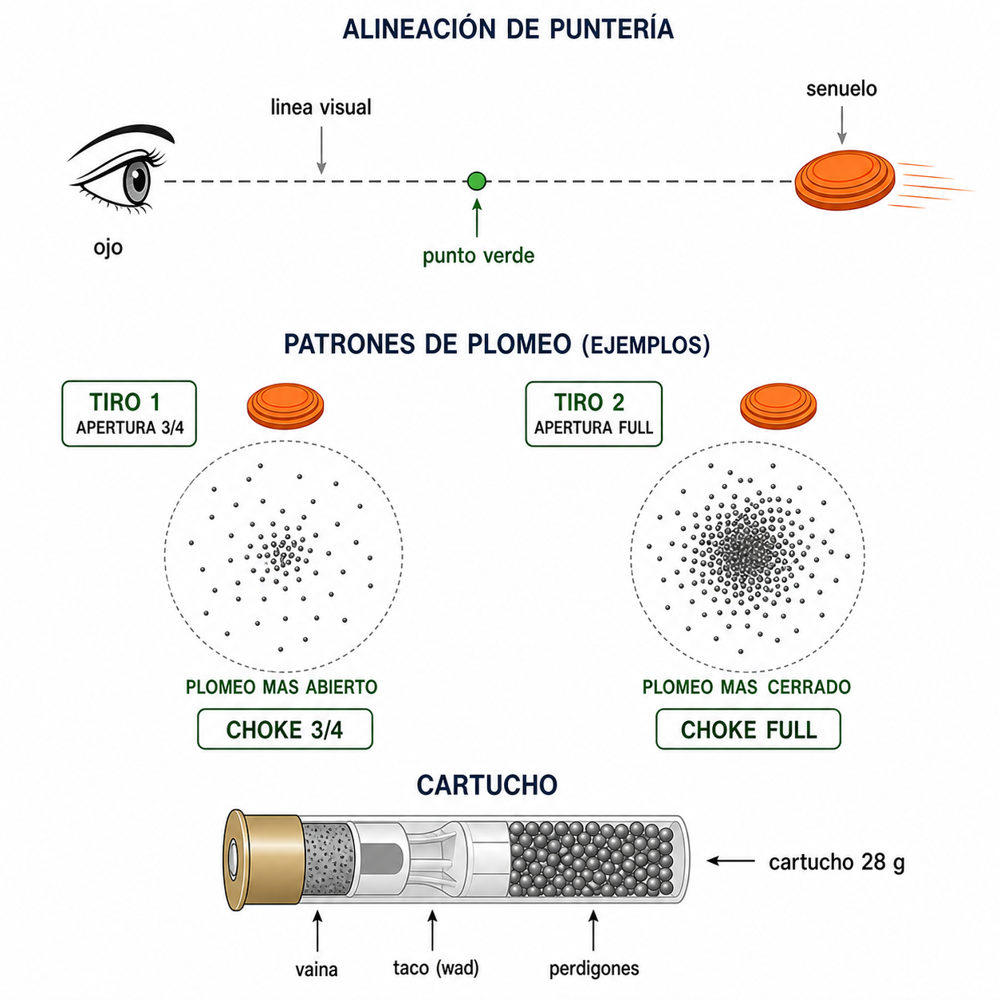
Qué hemos aprendido
- La culata coloca el ojo y por tanto modifica lo que el tirador cree estar viendo.
- El choke cambia apertura y densidad de plomeo; no compensa por sí solo una mala lectura.
- Los cartuchos deben entenderse por carga, velocidad, perdigón, taco, retroceso y distancia efectiva.
Lectura experta. La capa técnica de este capítulo conecta equipo y modelo: el simulador debe permitir variar apertura de tiro 1 y tiro 2, velocidad del cartucho, ganancia de solista y energía residual sin convertir esos controles en verdades absolutas.
Capítulo 06
Por qué un principiante falla el plato
Fallar no significa necesariamente “apuntar mal”. En plato, fallar puede significar mirar tarde, moverse tarde, parar el swing, tapar el objetivo, levantar la cabeza, usar una referencia mala o no tener suficiente densidad de plomeo en el momento correcto.
Comprender el fallo es una de las grandes promesas del simulador. Si solo se cuenta roto o fallado, se pierde la mitad del aprendizaje.
La falsa intuición
El principiante suele llevar el punto de mira al plato y disparar cuando lo ve alineado. Esa intuición es comprensible, pero llega tarde. El plato sigue moviéndose mientras se toma la decisión, mientras se aprieta el gatillo y mientras los perdigones vuelan.
Por eso muchos fallos son retrasos acumulados. No hay un único retardo, sino una cadena: ver, decidir, mover, disparar, volar.
Quedarse detrás
Quedarse detrás es quizá el fallo más famoso. En platos cruzados se ve con claridad: el disparo queda en la estela del plato. A veces el tirador sí llegó a pasar el plato, pero paró al disparar y perdió el adelanto.
La corrección no siempre es “apunta más delante”. Puede ser “mantén el movimiento”, “empieza desde otro punto de espera” o “lee antes la salida”.
Quedarse bajo
En platos ascendentes, quedarse bajo es habitual. Puede ocurrir porque el tirador no acompaña la subida, porque la escopeta tapa el objetivo, porque levanta la cabeza o porque su punto de impacto real no coincide con lo que cree ver.
La altura se mezcla con la visibilidad. Si al adelantar se tapa el plato, el segundo disparo se vuelve torpe. Por eso la relación entre culata, solista y punto de impacto no es un detalle estético.
Levantar la cabeza
Después del disparo aparece una tentación: mirar si se ha roto. Al levantar la cabeza, se rompe la alineación. Si el primer tiro falla, el segundo empieza desde una mala posición.
El instructor suele insistir en mantener la cara en la culata y seguir el plato. No es una manía. Es la manera de conservar información visual para corregir.
Demasiada información
Otro fallo aparece cuando el principiante intenta pensarlo todo: pies, hombro, mejilla, punto, adelanto, gatillo, resultado. La mente se satura y el gesto se vuelve rígido.
La solución pedagógica es reducir variables. Un plato, una corrección. Primero ver. Luego repetir. Después cambiar algo.
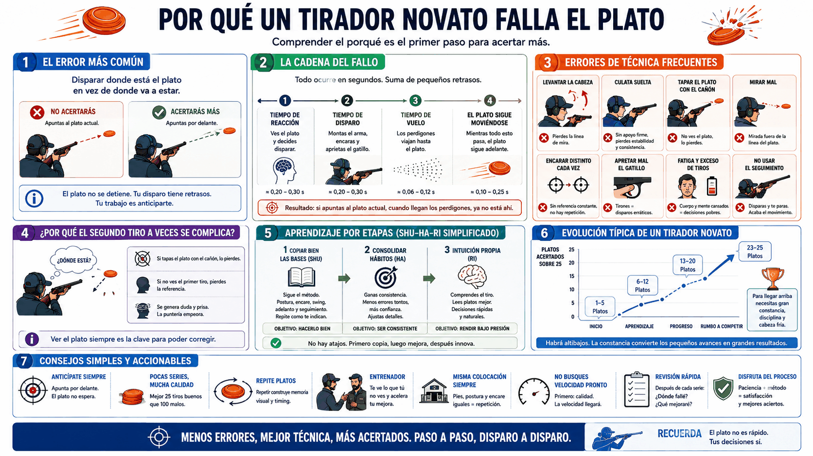
Qué hemos aprendido
- Muchos fallos son retrasos acumulados: ver tarde, mover tarde, disparar tarde y parar la mano.
- Alto/bajo y adelantado/retrasado deben interpretarse según la trayectoria real del plato.
- La corrección útil no es solo romper o fallar, sino explicar de qué manera se falló.
Lectura experta. Para instructores, este capítulo convierte frases de cancha en diagnósticos observables. La app debe ayudar a separar error visual, error temporal, error vertical y error de densidad de plomeo.
Capítulo 07
Aprendizaje progresivo y Shu-Ha-Ri
El aprendizaje del tiro al plato se parece al de otros gestos complejos. Al principio se copia una forma. Después se entiende por qué funciona. Finalmente se adapta. La tradición japonesa llama a esta progresión Shu-Ha-Ri; aquí la usamos como metáfora pedagógica, no como doctrina.
La intuición experta no se instala por consejo. Se construye con repetición de calidad.
Shu: obedecer una forma
En la primera etapa, el tirador necesita instrucciones claras y pocas. Cómo colocarse, cómo abrir y cerrar, cómo encarar, dónde mirar, cuándo pedir plato. No es el momento de mezclar técnicas ni de buscar estilo personal.
El simulador en esta etapa debe usarse con ayuda visual. La persona necesita ver qué significa adelantar antes de intentar hacerlo sin referencia.
Ha: variar sin perder la base
Cuando la seguridad y el encare empiezan a repetirse, se introducen variaciones. Cambiar puesto, ocultar trayectoria, repetir laterales, comparar plomeos, alternar Universal y Olímpico. Pero siempre con una pregunta concreta.
Esta etapa es peligrosa porque el tirador ya sabe lo suficiente para confundirse más. El método de una variable evita ese caos.
Ri: criterio propio
La etapa avanzada aparece cuando el tirador lee un plato sin verbalizar cada cálculo. No piensa “velocidad por tiempo”; siente el ritmo y acompaña. Pero esa intuición no niega la técnica: la incorpora.
Cuando aparece un patrón de fallo, incluso el avanzado vuelve al análisis. El simulador puede servir como lupa para revisar una sensación.
El profesor
Un profesor ve cosas que el tirador no puede ver: si levanta la cabeza, si se queda atrás, si cierra tarde, si mueve solo brazos, si el cañón tapa. El simulador no reemplaza esa mirada externa.
Lo que sí puede hacer es preparar al alumno para entender mejor la corrección del profesor.
Pocas series buenas
Aprender no es acumular detonaciones. Es repetir con atención. Una sesión corta, con pausas y objetivos concretos, puede enseñar más que una tarde entera tirando cansado.
La fatiga consolida errores. La ambición mal medida también.
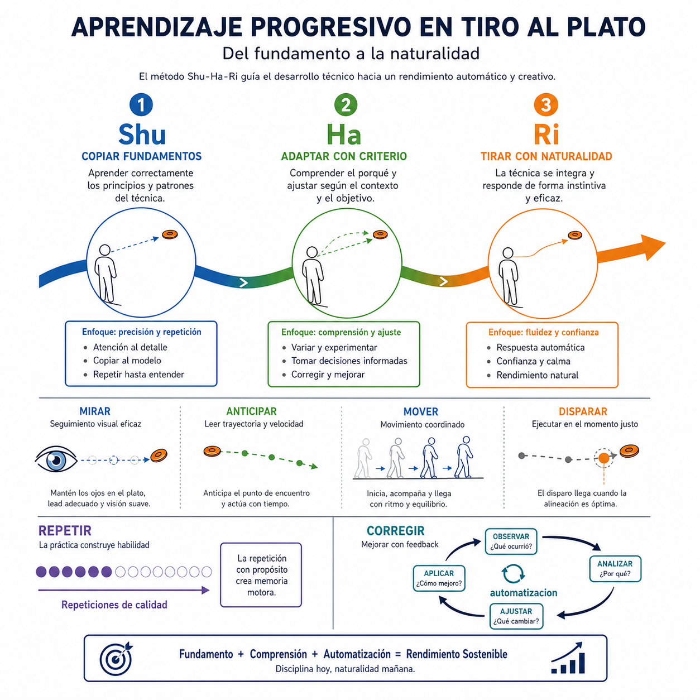
Qué hemos aprendido
- Primero se copia una forma segura; después se comprende; finalmente se adapta.
- La repetición solo enseña si tiene foco y corrección.
- El simulador prepara preguntas para el instructor, no sustituye su mirada externa.
Lectura experta. La lectura avanzada es metodológica: Plato debe fomentar práctica deliberada, no solo acumulación de intentos. Por eso repetir, ocultar ayudas y conservar correcciones son funciones pedagógicas, no adornos.
Capítulo 08
La geometría del adelantamiento explicada para tiradores
El adelantamiento no es una distancia fija que se memoriza. Es una respuesta a una relación cambiante. Si el plato se mueve, si se aleja, si sube, si el cartucho tarda, si el viento empuja o si el segundo tiro llega más tarde, el punto de encuentro cambia.
La geometría permite explicar esta intuición con palabras sencillas.
No se dispara al plato actual
El plato visible es una posición pasada para el disparo. Cuando el dedo acciona el gatillo, el plato sigue moviéndose. Cuando los perdigones salen y viajan, el plato se mueve aún más. Por tanto, el disparo debe dirigirse a una posición futura.
Ese lugar futuro es el punto de encuentro. En la pantalla puede verse como un área amarilla. En la cancha debe convertirse en una sensación visual.
Componentes lateral y vertical
Un plato puede exigir adelanto lateral, corrección de altura o ambas. Un cruce puro pide llevar por delante. Un ascendente pide no quedarse bajo. Un diagonal mezcla las dos cosas y además cambia su profundidad.
Por eso las correcciones útiles deben decir más que “fallaste”. Deben separar alto/bajo y adelantado/retrasado según el sentido del plato.
Distancia y tiempo
Cuanto más lejos está el plato, más tiempo tardan los perdigones. Aunque el movimiento lateral aparente parezca pequeño, el tiempo de vuelo puede exigir adelanto. La distancia engaña porque la pantalla comprime profundidad.
Este es uno de los puntos donde el simulador ayuda mucho: permite ver el retraso invisible.
El segundo disparo
El segundo tiro no es el primero con otra oportunidad. El plato está más lejos, quizá con otra velocidad vertical, y el choke puede ser distinto. Además, el tirador llega condicionado por el resultado emocional y corporal del primer disparo.
Si levantó la cabeza o paró el swing, el segundo tiro nace mal.
Métodos visuales
Hay diferentes formas de gestionar el adelantamiento: pasar el plato y disparar, mantener una separación, interceptar desde delante. No conviene mezclarlas al azar. Un principiante debe seguir el método de su instructor hasta entenderlo.
El simulador no impone una técnica, pero muestra las consecuencias espaciales de cada decisión.
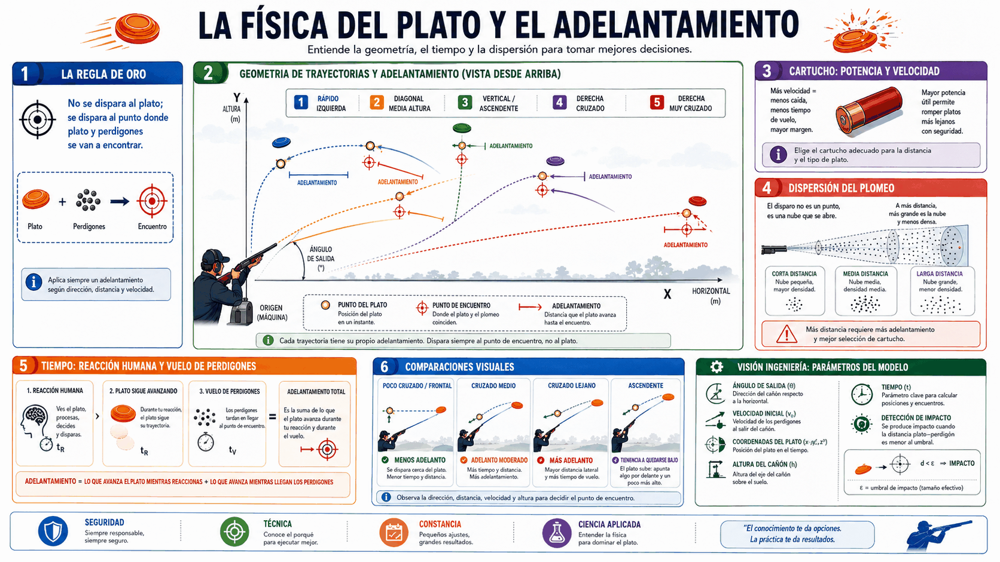
Qué hemos aprendido
- No se dispara al plato actual, sino a una posición futura.
- El adelanto tiene componente lateral, vertical y de profundidad.
- El segundo tiro exige otro cálculo porque el plato está más lejos y el patrón cambia.
Lectura experta. La comprobación técnica debe proyectar plato y plomeo en un plano de encuentro coherente, no limitarse a comparar posiciones 2D sobre pantalla. Esa distinción evita correcciones visualmente bonitas pero físicamente falsas.
Capítulo 09
La versión de ingeniería: el modelo físico
La ingeniería del simulador debe estar al servicio de la pedagogía. No se trata de llenar la página de ecuaciones para impresionar, sino de explicar qué se calcula, qué se aproxima y cómo se comprueba que el modelo no se contradice.
Un modelo honesto declara tanto su potencia como sus límites.
Sistema de coordenadas
La escena usa metros como unidad interna. El tirador mira desde una altura de ojo definida y el foso está a una distancia coherente con la modalidad. El suelo no se mueve cuando el usuario apunta; se mueve la mira.
Esta decisión evita un error conceptual frecuente en simuladores simples: convertir el ratón en cámara del mundo en vez de representación de la escopeta.
Lanzamiento del plato
Cada plato se define por máquina, ángulo horizontal, altura de referencia y alcance. La salida debe ser físicamente continua: la máquina, la boca de salida y la trayectoria inicial tienen que estar alineadas. No puede haber un quiebro artificial al salir del foso.
Después, la trayectoria puede curvar por gravedad, viento o sustentación simplificada, pero la salida debe respetar la lógica mecánica.
Plomeo como nube
El cartucho no se representa como una bala única. Se representa como una nube de perdigones con apertura, irregularidad, pequeñas diferencias de velocidad y longitud de cuerda. Esto permite que un disparo cercano al centro pueda fallar si no hay densidad suficiente, o que un perdigón llegue flojo.
La variación de plomeo evita el círculo perfecto que cualquier tirador reconocería como falso.
Energía residual
No basta con tocar geométricamente el plato. El perdigón debe llegar con energía suficiente para romper. En la realidad, ese umbral depende de muchos factores; en el simulador se usa una aproximación para enseñar que la distancia importa.
Esto impide que el juego premie disparos absurdamente lejanos como si todo perdigón fuese igual de eficaz.
Validación
El repositorio incluye una prueba automática de esquemas. Verifica que las trayectorias regladas reproduzcan altura a diez metros y alcance dentro de tolerancia. No convierte el simulador en homologado, pero evita romper la geometría sin darse cuenta.
Cada vez que se toquen esquemas o física, esa prueba debe ejecutarse.
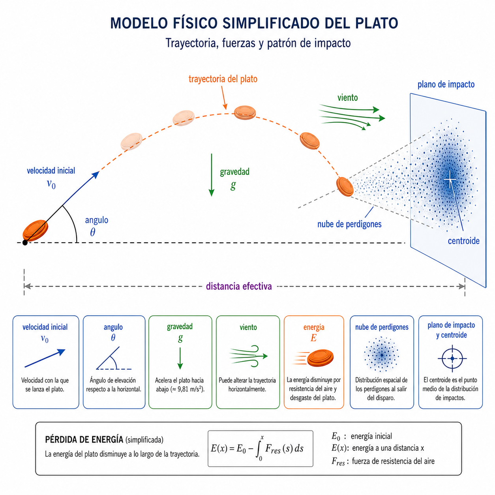
Qué hemos aprendido
- El modelo trabaja en metros, tiempos, velocidades, gravedad, viento y energía residual.
- El plomeo se representa como nube irregular con cuerda de perdigones, no como círculo perfecto.
- Las trayectorias regladas deben verificarse automáticamente para no romper la normativa al cambiar código.
Lectura experta. Este es el capítulo de auditoría: un experto debe poder reconocer qué variables son normativas, cuáles son aproximaciones pedagógicas y dónde están los tests que impiden degradar esquemas, alturas y alcances.
Capítulo 10
Cómo funciona exactamente el simulador
El simulador se usa como un puesto de entrenamiento visual. El usuario pide plato, lo ve salir, mueve el punto rojo, dispara y después lee la corrección. Todo lo que aparece en pantalla debe ayudar a esa secuencia, no distraerla.
Por eso la documentación de la interfaz no debe ser una lista seca de botones. Debe explicar qué decisión entrena cada control.
Pedir plato y disparar
El botón derecho del ratón pide plato. El botón izquierdo dispara. El punto rojo es la mira y debe coincidir con el cursor dentro de la zona de juego. Si aparecen dos referencias divergentes, la experiencia se rompe.
Pedir plato introduce un retardo de salida pequeño, entendido como retardo de sistema, no como reacción humana. La reacción real queda en el usuario: ver, decidir y mover.
Ayudas visuales
La ayuda amarilla muestra el área de adelanto. La nube azul muestra el plomeo estimado respecto a donde se dispara. La trayectoria naranja muestra el vuelo del plato si está activada. Todas estas ayudas deben poder ocultarse para entrenar sin pistas.
La ayuda no debe confundirse con el plato. El plato naranja es el objetivo real. La nube azul no acompaña al plato: representa el patrón de disparo.
Corrección posterior
Después del disparo, el simulador debe mostrar si el tiro quedó alto, bajo, adelantado o retrasado respecto al centroide ideal. Esa información debe conservarse hasta que se cambia de puesto, no desaparecer antes de que el usuario pueda leerla.
La corrección debe ser visualmente clara. Si hay textos que estorban o duplican lo que ya indican los colores, sobran.
Repetir plato
Repetir plato significa lanzar el mismo plato desde el mismo puesto, sin sumar al marcador ni avanzar la rotación. Es una función de entrenamiento y también reproduce la lógica de ciertos platos nulos.
Si repetir cambiara puesto o contara plato, perdería su valor pedagógico.
Capturas y lectura
Las capturas integradas en este manual muestran la interfaz real: vista completa, nube de adelanto y correcciones de doble tiro. Deben actualizarse cuando cambie la aplicación, porque una captura desfasada enseña una interfaz que ya no existe.
El manual y la app deben evolucionar juntos.

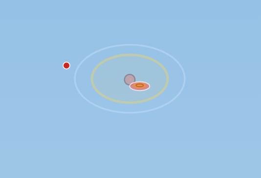

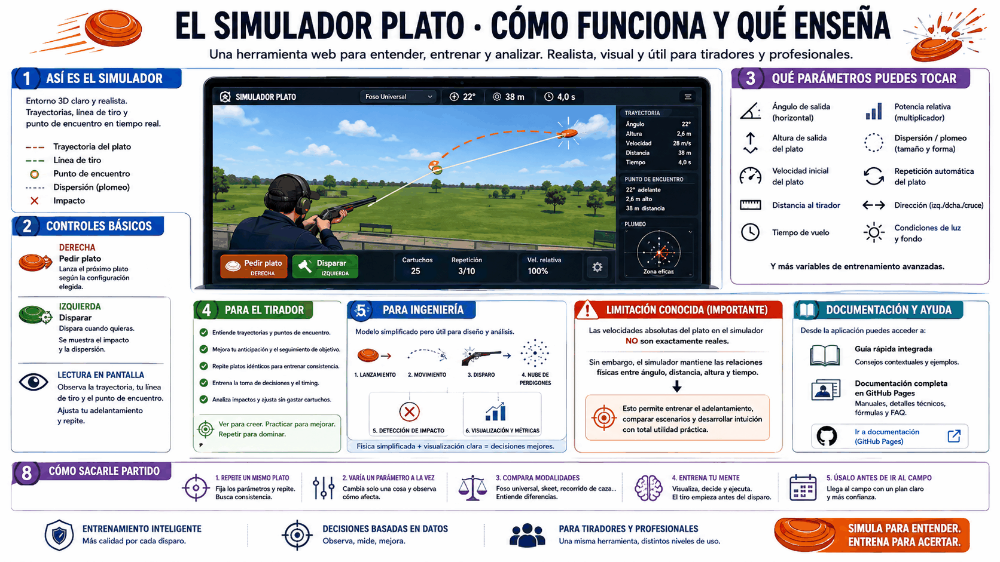
Qué hemos aprendido
- Botón derecho pide plato; botón izquierdo dispara; el punto rojo es la mira.
- La ayuda amarilla enseña adelanto; la nube azul representa plomeo donde se dispara; el plato naranja es el objetivo real.
- La corrección debe permanecer hasta el cambio de puesto para que el usuario pueda aprender del disparo.
Lectura experta. La lectura técnica de interfaz exige coherencia: las ayudas no deben contradecir la física, repetir plato debe conservar puesto y parámetros, y las capturas del manual deben actualizarse cuando cambie la aplicación.
Capítulo 11
Universal, Olímpico, Robot y otras modalidades
Cambiar de modalidad no cambia la física básica del encuentro entre plato y plomeo, pero sí cambia la geometría, la previsibilidad y la exigencia visual. Un tirador que solo ha visto una configuración puede sentirse perdido cuando cambia la cancha.
Por eso el simulador distingue Universal, Olímpico y Robot.
Foso Universal
En Foso Universal hay cinco máquinas dentro del foso y el tirador rota por cinco puestos. Los esquemas definen ángulos, alturas y distancias. El señuelo central ayuda a entender la zona de salida, pero no elimina la sorpresa.
La dificultad está en leer una variedad de salidas dentro de un marco reglado.
Foso Olímpico
En Foso Olímpico se trabaja con quince máquinas agrupadas. La relación entre puesto y máquina cambia, y también los requisitos de cartucho y esquema según normativa. La experiencia visual es más exigente y rápida.
En el simulador, esta modalidad debe mostrar sus señuelos y máquinas de forma coherente con el puesto activo.
Robot
El robot representa máquinas programables o wobble que pueden producir patrones más variados. En ferias y tiradas populares, los ajustes pueden ser extremos: platos altos muy altos, laterales bajos muy rápidos, secuencias que parecen circulares y luego cambian.
Estos platos pueden no ser normativos y aun así ser útiles para entrenar lectura de extremos. La app debe etiquetar claramente cuándo algo es compatible con una referencia y cuándo es popular/no normativo.
Trillos y cultura popular
En algunas zonas se habla de trillos o tiradas de feria para referirse a escenarios donde la máquina se ajusta de forma más agresiva o menos ortodoxa. Quien entrena mucho ahí aprende patrones que no siempre coinciden con el plato federativo.
El simulador puede ayudar a comparar esas culturas sin despreciarlas ni confundirlas con reglamento.
Misma lógica, distintos parámetros
Lo importante es no construir tres juegos separados. Siempre hay tirador, plato, trayectoria, plomeo y corrección. Lo que cambia es la máquina, el esquema, el cartucho, la apertura y la previsibilidad.
Esa continuidad permite que el usuario aprenda física general y luego la aplique a modalidades concretas.
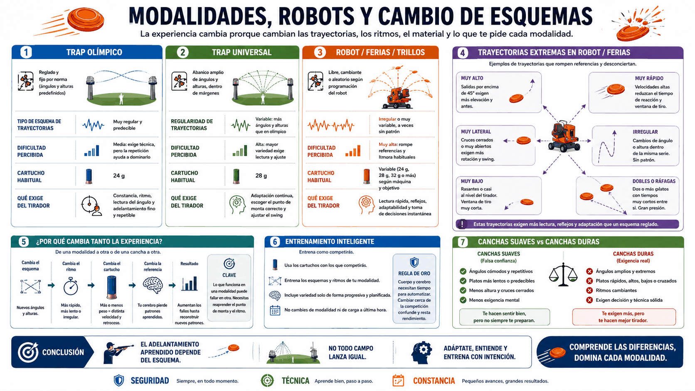
Qué hemos aprendido
- Universal, Olímpico y Robot comparten física básica, pero cambian geometría y previsibilidad.
- Lo normativo debe distinguirse de lo popular o no homologado.
- El robot permite estudiar extremos de altura, lateralidad y velocidad sin confundirlos con estándares oficiales.
Lectura experta. Para federación o técnicos, este capítulo separa esquemas reglados de configuraciones experimentales. Esa separación es esencial para que el simulador sea útil sin vender como oficial lo que es entrenamiento comparativo.
Capítulo 12
Cómo utilizar el simulador para entrenar
El simulador puede usarse bien o mal. Usarlo mal es disparar al azar hasta acertar. Usarlo bien es entrar con una pregunta, repetir, cambiar una variable y salir con una conclusión pequeña que luego pueda probarse en el campo.
La práctica deliberada es menos espectacular que jugar, pero enseña más.
Método de una variable
Elige un plato y no cambies todo a la vez. Si quieres estudiar adelanto, no cambies también choke, viento y puesto. Si quieres estudiar plomeo, mantén trayectoria y cartucho.
Esta disciplina convierte el simulador en laboratorio. Sin ella, solo es entretenimiento.
Ejercicio de adelanto
Activa la ayuda amarilla y observa dónde se coloca respecto al plato. Repite el mismo plato varias veces. Después oculta la ayuda y trata de llevar el punto rojo al mismo lugar. Por último, mira la corrección posterior.
No busques solo romper. Busca saber por qué rompiste o por qué fallaste.
Ejercicio de altura
Escoge un plato ascendente. Compara guardia neutra y guardia alta, solista plana y ganancia. Observa si tiendes a tapar el plato o a quedarte bajo.
Este ejercicio ayuda a entender por qué algunos tiradores ajustan culata o punto de espera.
Ejercicio de segundo tiro
Dispara deliberadamente tarde o bajo en el primer tiro y observa qué ocurre con el segundo. El objetivo es sentir que el segundo disparo no empieza después del primero, sino durante la continuidad del mismo seguimiento.
Si levantas la cabeza en la vida real, el segundo tiro llega pobre. El simulador puede recordarlo visualmente.
Del ordenador al campo
Antes de ir al campo, escribe una hipótesis de entrenamiento: “voy a mirar si paro la mano en laterales derechos” o “voy a comprobar si tapo los ascendentes”. Esa hipótesis debe ser observable por un instructor.
El simulador prepara preguntas; el campo confirma respuestas.
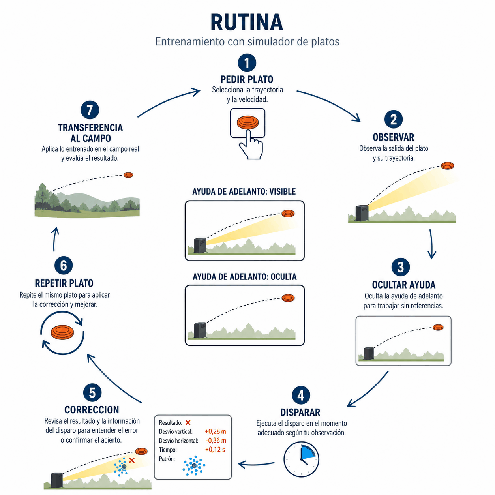
Qué hemos aprendido
- Entrenar bien es entrar con una pregunta, no disparar sin plan.
- Conviene cambiar una sola variable cada vez.
- El objetivo final es transferir una hipótesis al campo real y contrastarla con instructor o resultado observable.
Lectura experta. La versión avanzada de este método es crear protocolos: mismo plato, ayuda visible, ayuda oculta, repetición, corrección y transferencia. Así el simulador se vuelve herramienta de entrenamiento reproducible.
Capítulo 13
Limitaciones y uso responsable del modelo
Un proyecto serio no se defiende exagerando lo que hace. Se defiende explicando bien lo que hace y lo que no. Plato puede ser útil precisamente si declara sus simplificaciones con claridad.
La simulación ayuda a entender relaciones, no a certificar resultados absolutos.
Lo que sí conserva
Conserva relaciones útiles: si aumenta la distancia, aumenta el tiempo de vuelo; si el plato cruza más, suele aumentar el adelanto; si el choke abre más, cambia el patrón; si la energía cae demasiado, el impacto puede no romper.
Estas relaciones forman intuición.
Lo que simplifica
No reproduce toda la aerodinámica del plato ni todos los detalles de un cartucho. No modela cada deformación de perdigón, cada turbulencia, cada lote de munición ni cada cañón concreto.
Tampoco reproduce al tirador completo: postura, tensión, ruido, retroceso, miedo, dominancia ocular y fatiga quedan fuera o muy simplificados.
No homologar lo que no está homologado
Que un valor aparezca en pantalla no significa que sea una medición oficial. Una cancha se homologa con procedimientos reales, no con una página web. Un cartucho se verifica con pruebas, no con una aproximación visual.
El manual debe repetir esto sin miedo porque aumenta la credibilidad del proyecto.
Cómo informar errores
Si un tirador detecta que una trayectoria no sale de donde debería, que el plomeo se dibuja donde no toca o que una corrección contradice el resultado, eso no debe taparse. Debe registrarse y revisarse.
El desarrollo de este simulador ha avanzado precisamente porque se han señalado errores conceptuales.
Uso responsable
No uses Plato para justificar conductas inseguras, compras precipitadas o conclusiones absolutas. Úsalo para aprender a mirar y para conversar mejor con personas que saben más.
Esa modestia práctica es su fuerza.
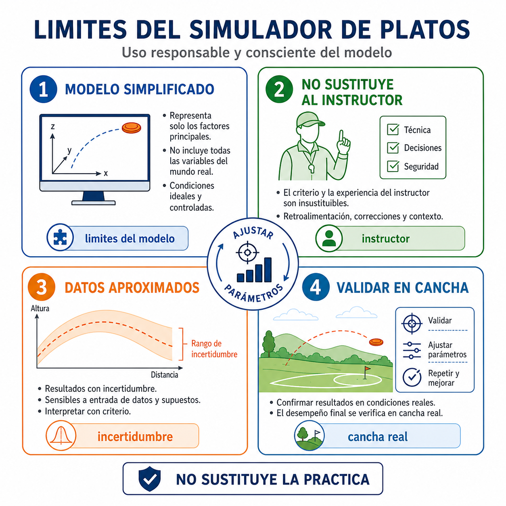
Qué hemos aprendido
- El simulador conserva relaciones físicas útiles, pero simplifica muchos detalles reales.
- No homologa canchas, armas, cartuchos ni rendimiento de un tirador.
- Los errores detectados deben registrarse porque son parte de la mejora del modelo.
Lectura experta. Este capítulo protege la credibilidad del proyecto: declarar incertidumbre, límites de modelo y necesidad de validación real es justo lo que permite presentarlo ante personas expertas sin exagerar.
Capítulo 14
Coste del entrenamiento y utilidad económica
El tiro al plato cuesta dinero. Cancha, cartuchos, desplazamientos, licencias, cuotas, equipamiento y mantenimiento se acumulan. No tiene sentido prometer que un simulador elimina ese coste, pero sí puede ayudar a que una sesión real tenga más propósito.
El ahorro más interesante no es solo económico: es ahorrar frustración y repeticiones sin aprendizaje.
Coste visible e invisible
El coste visible es fácil: serie, caja de cartuchos, gasolina. El invisible incluye dolor por mala técnica, tiempo perdido, compras equivocadas y hábitos que luego cuesta corregir.
Un principiante que dispara mucho sin entender puede gastar más aprendiendo menos.
Preparar la sesión
Si antes de ir al campo se ha trabajado un concepto, la sesión tiene dirección. No se llega a “ver qué pasa”, sino a comprobar una hipótesis.
Esto no reemplaza al profesor; lo aprovecha mejor.
Calculadoras y prudencia
Cualquier cálculo de coste debe ser editable y fechado. Los precios cambian por club, región, cartucho y momento. Publicar una cifra como universal sería engañoso.
La utilidad económica de Plato debe expresarse como orientación, no como promesa.
Valor pedagógico
Incluso si no ahorra un euro, puede ahorrar malentendidos. Entender qué significa adelantar, qué hace el choke o por qué el segundo tiro es distinto ya tiene valor.
La claridad también es una forma de eficiencia.
Entrenar menos, observar más
A veces la mejora no exige más platos, sino mirar mejor los mismos platos. La cámara lenta, la repetición y la corrección visual fomentan esa actitud.
Ese cambio de mentalidad puede acompañar al tirador durante años.
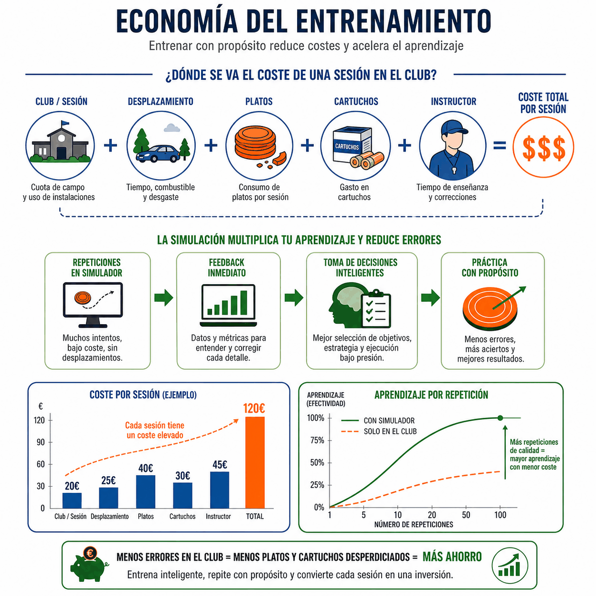
Qué hemos aprendido
- El simulador no elimina el coste del campo, pero puede hacer que cada sesión tenga más intención.
- Preparar preguntas antes de tirar reduce repeticiones sin aprendizaje.
- La claridad conceptual también ahorra: evita compras, hábitos y entrenamientos mal orientados.
Lectura experta. La lectura federativa puede ser formativa: una herramienta así ayuda a explicar conceptos antes de consumir platos y cartuchos, especialmente en escuelas, cursos de iniciación y sesiones de tecnificación.
Capítulo 15
Instalación, licencia, atribución y reutilización
Plato es una aplicación HTML y un manual web. Esa sencillez permite abrirlo desde GitHub Pages, copiarlo localmente o adaptarlo. Pero la facilidad de copia no elimina la autoría.
El proyecto debe conservar siempre la referencia a Roberto Canales Mora y al sitio original.
Uso desde la web
La forma normal de usar Plato es abrir la página publicada y entrar al simulador desde el botón principal. Esa ruta evita confusiones entre ver código en GitHub y ejecutar la aplicación en GitHub Pages.
El manual vive en `index.html`; la aplicación vive en `app.html`. Esa separación es clara y suficiente.
Uso local
Para ejecutarlo localmente conviene servir la carpeta con un servidor simple, por ejemplo `python3 -m http.server 8000`. Abrir directamente el archivo puede funcionar, pero no siempre reproduce bien rutas y comportamiento.
El README debe explicar esta diferencia para que alguien no crea que la aplicación está rota al abrir el código fuente.
Licencia MIT con atribución
La licencia MIT permite usar, copiar, modificar y redistribuir, pero exige conservar el aviso de copyright y permiso. En este proyecto se deja claro que debe citarse a Roberto Canales Mora y enlazarse la página original.
Si alguien publica un derivado sin atribución, no solo incumple la licencia: borra el contexto pedagógico del proyecto.
Reutilización en clubes o formación
Si se usa en una presentación, curso o club, conviene mostrar la URL original y explicar sus límites. La herramienta gana valor cuando se presenta honestamente.
No debe presentarse como simulador oficial salvo validación expresa.
Cambios y versiones
Quien modifique física, esquemas o interfaz debe documentarlo. Un manual que explica una versión distinta a la publicada genera desconfianza.
Por eso el proyecto necesita disciplina de cambios.
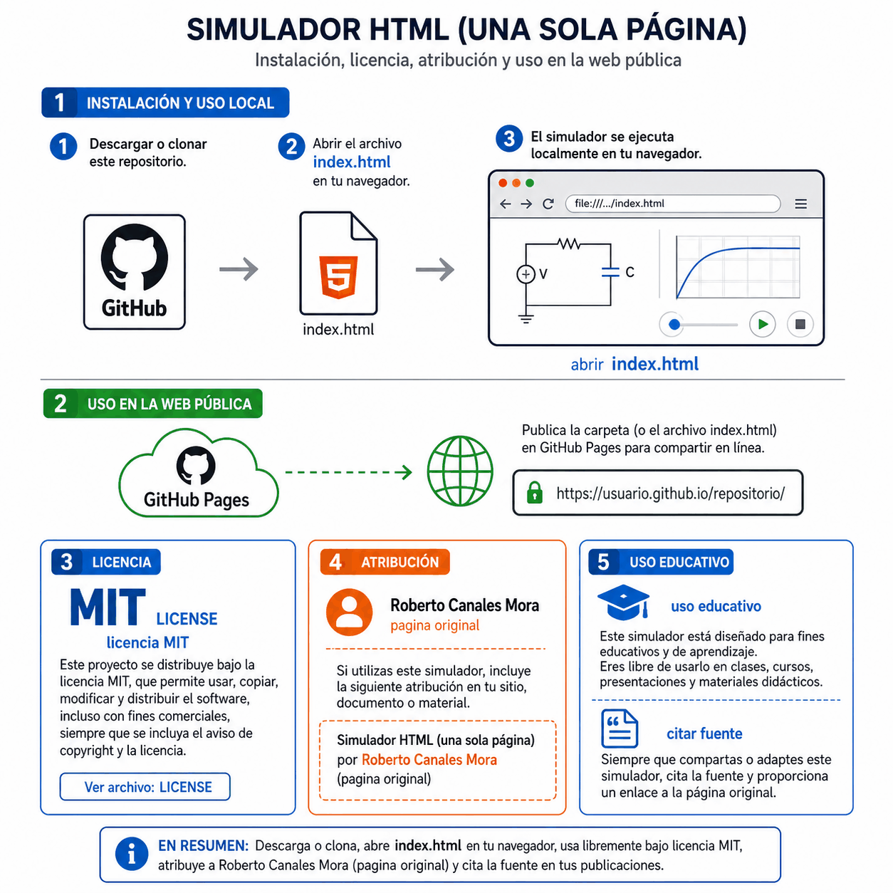
Qué hemos aprendido
- La web pública se ve en GitHub Pages; el código vive en el repositorio.
- La aplicación puede ejecutarse localmente, pero conviene servirla con un servidor simple.
- La licencia MIT permite reutilizar, siempre conservando copyright, licencia, autoría y enlace original.
Lectura experta. Para reutilización institucional, la clave es trazabilidad: si un club, formador o tercero modifica el simulador, debe declarar cambios y mantener la atribución a Roberto Canales Mora y al proyecto original.
Capítulo 16
Fuentes, glosario, preguntas frecuentes y control documental
Un libro técnico-pedagógico necesita fuentes. No para llenar el pie de página, sino para que el lector sepa qué es norma, qué es experiencia, qué es simplificación y qué es decisión de diseño.
También necesita glosario, porque nadie aprende bien un deporte si cada frase contiene tres palabras que no se atreve a preguntar.
Jerarquía de confianza
Primero están las fuentes oficiales: BOE, Guardia Civil, ISSF, FITASC y federaciones. Después vienen documentos técnicos, fabricantes y bibliografía. La experiencia de campo es valiosa, pero debe nombrarse como experiencia.
Esta jerarquía evita que una costumbre local se convierta en supuesta norma universal.
Glosario para principiantes
Adelanto, plomeo, choke, solista, encare, guardia, foso, plato nulo, robot, trillo, segundo tiro y punto de encuentro deben definirse con sencillez. El objetivo no es simplificar el deporte, sino abrir la puerta al vocabulario.
Cuando el principiante entiende las palabras, entiende mejor las correcciones.
Preguntas frecuentes
¿Por qué fallo si apunto al plato? Porque el plato se mueve mientras el disparo viaja. ¿Por qué no basta con abrir el plomeo? Porque la densidad y la energía también importan. ¿Por qué repetir plato? Porque repetir permite aislar una variable.
Las preguntas frecuentes deben crecer a partir de dudas reales de usuarios.
Control documental
Cada gran cambio del simulador debe reflejarse en el manual. Si cambia la fórmula de plomeo, la salida del robot o la corrección visual, el texto debe actualizarse. La documentación no puede ir por detrás indefinidamente.
La credibilidad de Plato dependerá de esa coherencia.
Fuentes principales
Entre las fuentes iniciales están Guardia Civil para licencias, BOE para Reglamento de Armas, ISSF para reglas olímpicas, FITASC para Foso Universal, documentación técnica de balística de escopeta y el propio repositorio Plato para la implementación.
Toda fuente normativa debe revisarse antes de tomar decisiones reales.
Orientación administrativa sobre escopetas y armas de tiro deportivo.
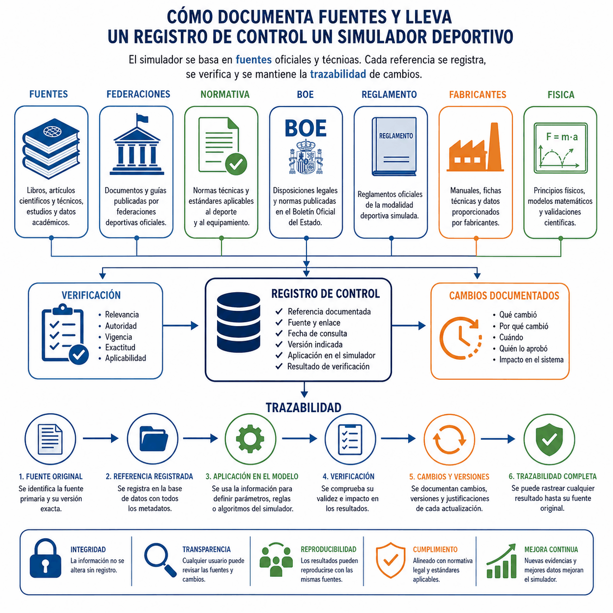
Qué hemos aprendido
- Las fuentes oficiales mandan sobre rumores, costumbres locales o memoria.
- El glosario convierte vocabulario técnico en lenguaje accesible.
- La documentación debe cambiar cada vez que cambian física, interfaz o esquemas.
Lectura experta. La lectura experta final es documental: el proyecto debe poder auditar fuentes, pruebas, cambios y decisiones. Sin esa trazabilidad, una simulación prometedora se vuelve difícil de defender.
Cierre
Conclusiones útiles del manual
Si una persona llega hasta aquí, no debería salir pensando que ya sabe tirar al plato. Debería salir con algo más valioso: una estructura mental para aprender mejor, preguntar mejor y entrenar con más intención.
Para quien empieza
Empieza por seguridad, club, instructor y fuentes oficiales. No conviertas la compra de material en el primer problema. Antes de hablar de chokes, aprende a comportarte en la cancha, a mirar el plato y a entender qué significa fallar.
Para quien ya tira
Usa Plato para nombrar tus errores. No basta con decir que un plato “se fue”. Pregunta si te quedaste bajo, retrasado, si paraste la mano, si el segundo tiro llegó tarde o si el patrón ya no tenía densidad suficiente.
Para instructores, clubes y federaciones
El proyecto gana valor si se usa como apoyo didáctico, no como sustituto de normativa ni de práctica real. Su utilidad está en hacer visible la física del adelanto, documentar supuestos y separar con claridad lo normativo de lo experimental.
Línea de trabajo futura
El manual debe seguir creciendo con mejores capturas, contrastes de campo, datos de cartuchos, pruebas de plomeo reales y revisión de esquemas. La ambición correcta no es cerrar el tema, sino convertir cada mejora en documentación verificable.
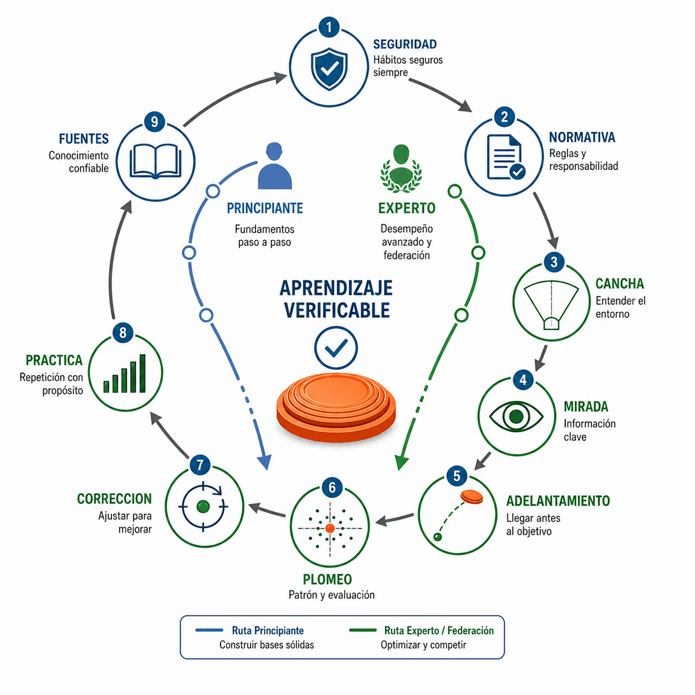
Qué nos llevamos
- El tiro al plato se aprende con seguridad, mirada, método y repetición de calidad.
- La física ayuda a entender el adelanto, pero debe explicarse en lenguaje de tirador.
- Una herramienta creíble declara fuentes, límites, pruebas y autoría.
Lectura experta. La conclusión técnica es que Plato debe mantenerse como un sistema auditable: cada parámetro físico, cada esquema y cada ayuda visual tienen que poder explicarse y verificarse.